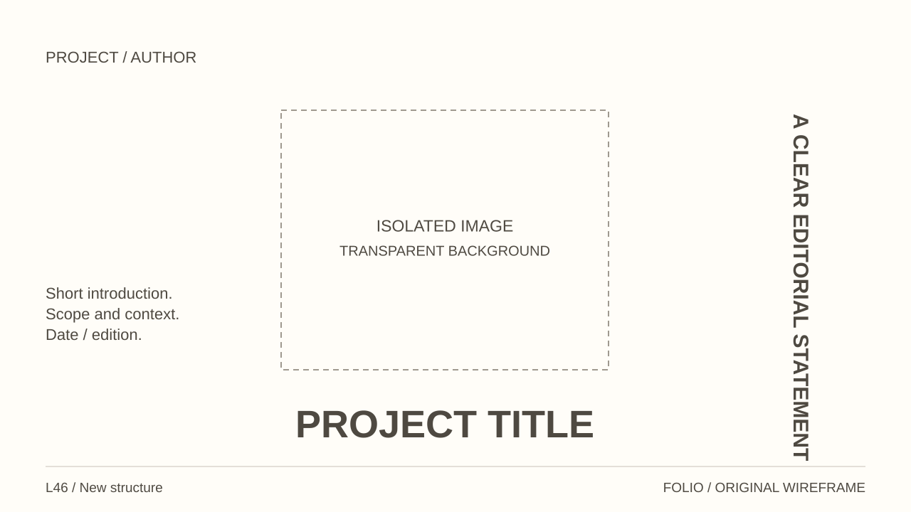
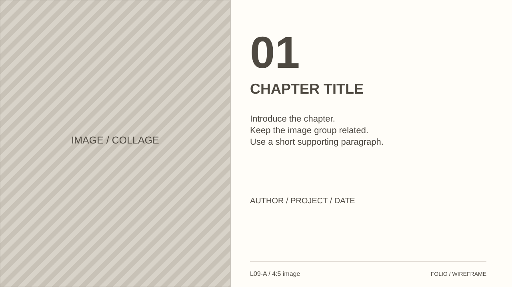
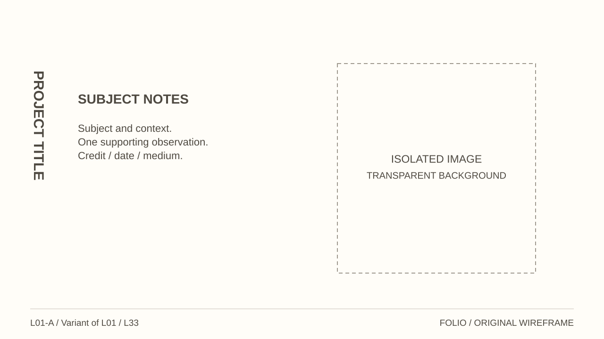
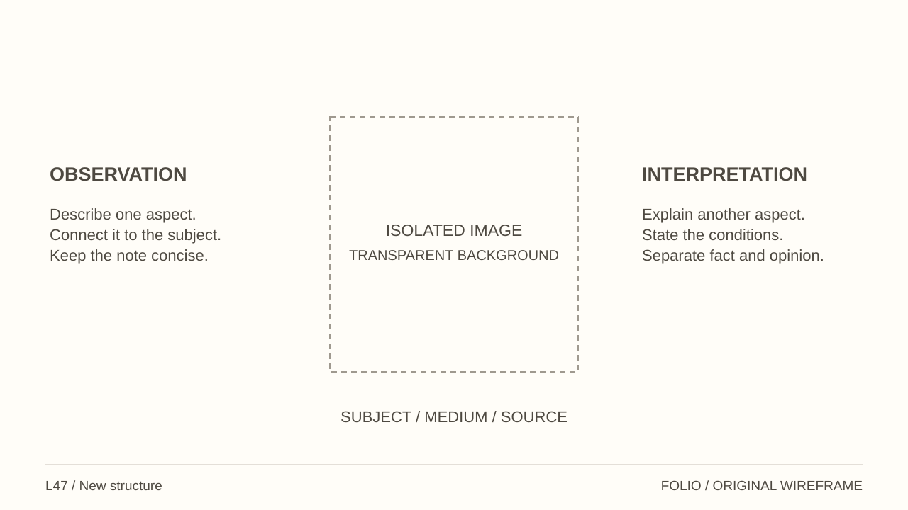
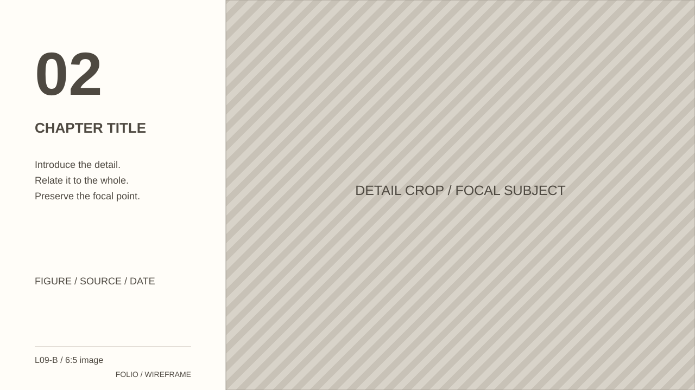

<!doctype html><html lang="en"><meta charset="utf-8"><meta name="viewport" content="width=device-width,initial-scale=1"><title>Folio / Illustration layout studies</title><style>*{box-sizing:border-box}body{margin:0;background:#f4f1ec;color:#4e4941;font:16px Arial,sans-serif}header,main{max-width:1440px;margin:auto;padding:24px}h1{font-size:26px}main{display:grid;grid-template-columns:repeat(2,minmax(0,1fr));gap:24px}figure{margin:0;min-width:0}figcaption{font-weight:bold;margin-bottom:12px;line-height:1.4}img{display:block;width:100%;aspect-ratio:16/9;border:1px solid #c9c2b8;background:#fffdf8}a{color:inherit}footer{padding:24px}@media(max-width:800px){main{grid-template-columns:1fr}}</style><header><h1>Illustration / Editorial Portfolio</h1></header><main><figure><figcaption>L46 / Central subject and sideways statement</figcaption><a href="L46.svg"></a></figure><figure><figcaption>L09-A / Image-led chapter opener</figcaption><a href="L09-A.svg"></a></figure><figure><figcaption>L01-A / Sideways title and isolated subject</figcaption><a href="L01-A.svg"></a></figure><figure><figcaption>L47 / Central subject and paired annotations</figcaption><a href="L47.svg"></a></figure><figure><figcaption>L09-B / Chapter rail and edge-cropped image</figcaption><a href="L09-B.svg"></a></figure></main><footer>Folio</footer></html>